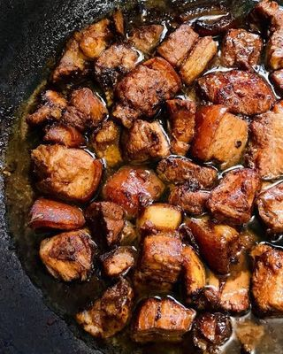

Adobo
Nagustuhan ko tong adobo at di lang naman ako, kundi lahat ng pinoy sapagkat
etoy tradition na saatin kase lahat ng ating mga magulang ay pinag luluto tayo
neto may ibat ibang klsse ng adobo meron etong adobong baboy, manok, sitaw at iba pa